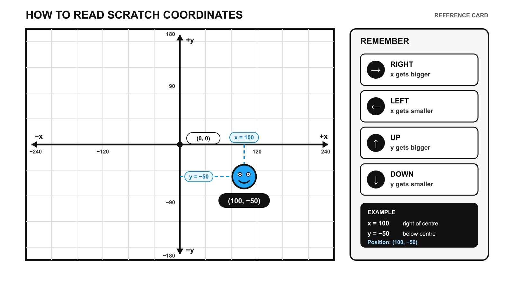
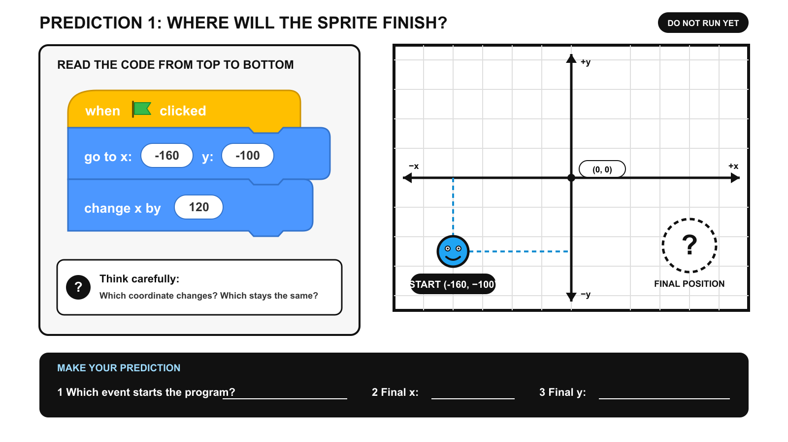

Coordinate decoder
Teach x before y, horizontal before vertical, then check four understanding questions.
Year 6 Computing · Term 1 Week 3
MISSION / 03
Use events, sequencing and coordinates to guide an explorer through the maze and reach the key.
TEACHER OVERVIEW
Review every student page, download the resources and inspect saved profiles on this device.
Teach x before y, horizontal before vertical, then check four understanding questions.
Students trace three block sequences using the accurate prediction images.
Students build START → A → B → C → D → KEY and upload evidence.
Fast finishers complete at least three increasingly demanding improvements.
LESSON RESOURCES
THIS DEVICE
| Student | Class | Progress | Last saved |
|---|
STARTER · 8 MINUTES
Learn the rule, then answer all four questions before moving on.
Know that a coordinate has x and y values.
Use coordinates to locate a sprite.
Explain which value changes movement.
The x coordinate moves a sprite left or right. Negative x is left; positive x is right.
Memory tip: walk along the corridor before climbing the stairs.

MAIN ACTIVITY 1 · 12 MINUTES
Read every block from top to bottom. Work out the final x and y without using Scratch first.

MAIN ACTIVITY 2 · 25 MINUTES
Choose the prepared template or a blank Scratch project, then complete Version 1.
The stage, explorer, key, portal and first START → A movement are already prepared.
Download Main Activity 2 templateChoose this route if you are confident creating the sprites and stage yourself.
Open a new Scratch project ↗Download starter referenceScratch opens in a new tab. Keep this lesson tab open.
EXACT COORDINATES
REQUIRED SCREENSHOT
Your screenshot is saved on this device and placed into your final PDF report.
EXTENSION · UP TO 10 MINUTES
Each level adds a more demanding idea to your working coordinate algorithm.
COORDINATE CHALLENGE
After reaching the key, add one more glide block to the portal at (195, −140).
The explorer visits all checkpoints, collects the key and finishes inside the portal.
PLENARY · 5 MINUTES
Your answers are included in the evidence PDF, so write complete sentences.
FINAL EVIDENCE
Your report combines every saved response, completed challenge and screenshot.
STEP 1
The filename automatically uses your name and class. Open the PDF after downloading and check that your screenshots are visible.
STEP 2 · MICROSOFT TEAMS
Name_Class_CoordinateQuest.pdf.